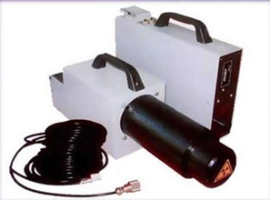

Общий и специальные журналы для ТХ и ТКР

Состав общих и специальных журналов на технологические и магистральные трубопроводы отличается друг от друга. Некоторое сходство составляет только:
- Общий журнал работ (Приказ Минстроя №1026/пр, приложение 1)
- Журнал входного контроля (СП 48.13330.2019 или ОРД Заказчика))
Это основные документы, которые ведутся в обязательном порядке.
Технологические трубопроводы
Список специальных журналов указан в следующих нормативных документах:
- ВСН 478-86 Производственная документация по монтажу технологического оборудования и технологических трубопроводов
- приказ Ростехнадзора №444 от 21.12.2021
- ГОСТ 32569-2013 Трубопроводы технологические стальные
- СП 75.13330.2011 Технологическое оборудование и технологические трубопроводы
Рассмотрим, какие журналы ведутся при монтаже технологических трубопроводов:
1 | Журнал по сварке трубопроводов (Для трубопроводов I и II категорий) | ГОСТ 32569-2013, форма 3 | |
2 | Журнал учёта и проверки качества контрольных сварных соединений | ГОСТ 32569-2013, форма 4 | |
3 | Журнал сборки разъёмных соединений трубопроводов с давлением более 10 МПа (100 кгс/см²) с контролируемым усилием натяжения | ГОСТ 32569-2013, форма 6 | |
4 | Журнал термической обработки сварных соединений | ВСН 478-86, форма 8 | |
5 | Журнал входного контроля и контроля качества получаемых деталей, материалов, изделий, конструкций и оборудования | СП 543.1325800.2024, приложение Г |
Также в ВСН 478-86 есть немного другая форма журнала сварочных работ и некоторые дополнительные журналы:
| 1 | Журнал сварочных работ | ВСН 478-86 | |
| 2 | Журнал учета и проверки качества контрольных (пробных) сварных соединений | ВСН 478-86, ф.7 | |
| 3 | Журнал радиографического контроля | ВСН 478-86, Приложение 15 Рекомендуемое | |
| 4 | Журнал ультразвукового контроля | ВСН 478-86, Приложение 17 Рекомендуемое | |
| 5 | Журнал цветной дефектоскопии | ВСН 478-86, Приложение 19 Рекомендуемое |
Журналы радиографического, ультразвукового контроля и цветной дефектоскопии ведутся организациями, которые осуществляют контроль.
Рассмотрим три распространенных метода дефектоскопии и их различия.
Радиографический контроль | Ультразвуковой контроль | Цветная дефектоскопия |
| Направлен на выявление внутренних дефектов — трещин, пор, непроваров, флюсовых и шлаковых включений, подрезов, смещений кромок, свищей и пр. | Позволяет выявить внутренние дефекты сварочных швов, определить их точное расположение и глубину. | Позволяет выявить дефекты, выходящие на поверхность сварного шва и околошовной зоны: трещины, раковины, поры, непровары и др. |
| Основан на ослаблении ионизирующего — рентгеновского излучения или гамма-излучения — при взаимодействии с материалом объекта контроля | Основан на свойстве ультразвука не менять прямолинейную траекторию, проходя сквозь однородную среду. | Основан на капиллярном проникновении специальных индикаторных жидкостей в несплошности материала сварного шва и околошовной зоны. |
 |
Давайте немного попрактикуемся. Распределите картинки в правильные столбцы в зависимости от того, какой метод дефектоскопии изображен.
Источник и ограничения: для просмотра требуется сеть и доступ к внешней площадке.
Магистральные трубопроводы
Список специальных журналов указан в СП 392.1325800.2018 Трубопроводы магистральные и промысловые для нефти и газа. Исполнительная документация при строительстве (приложение А, рекомендуемое). Рассмотрим, какие журналы ведутся при монтаже магистральных трубопроводов
Общие документы | ||
1 | Журнал замечаний и предложений по ведению строительно-монтажных работ | Форма № 1.5 |
2 | Журнал авторского надзора | Форма № 1.6 |
Свайные работы | ||
| 3 | Журнал погружения (забивки) свай. Сводная ведомость забитых свай | Форма № 4.1 |
| Земляные работы | ||
| 4 | Журнал производства земляных работ | Форма № 5.1 |
| Сварочно-монтажные работы | ||
| 5 | Журнал сварки | Форма № 6.1 |
| 6 | Журнал регистрации результатов механических испытаний допускных и контрольных сварных соединений | Форма № 6.3 |
| Изоляционно-укладочные работы | ||
| 7 | Журнал изоляционно-укладочных работ и ремонта изоляции | Форма № 7.1 |
| Переходы через водные преграды | ||
| 8 | Журнал производства буровых работ | Форма № 11.17 |
| Общестроительные работы | ||
| 9 | Журнал бетонных работ | Форма № 12.1 |
| 10 | Журнал по монтажу строительных конструкций | Форма № 12.2 |
| 11 | Журнал по выполнению антикоррозионной защиты сварных соединений | Форма № 12.3 |
Журналы бетонных работ и журнал по монтажу строительных конструкций не отличаются от привычных нам форм, указанных в СП 70.13330.2012. Все остальные журналы имеют иную форму.
Также на основании Приказа Ростехнадзора от 27.09.2018 № 468 и нормативной документации, которая указана в данном документе, требуются журналы дефектоскопии. Их форма утверждается организацией, которая проводит данный контроль.
{kind=link}
{kind=link}
{kind=link}